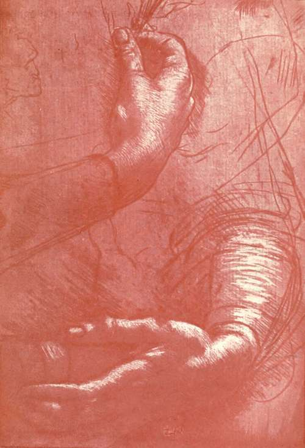

The Records, 1494-1519. Part 3
Description
This section is from the book "Leonardo Da Vinci", by Edward McCurdy. Also available from Amazon: Leonardo Da Vinci.
The Records, 1494-1519. Part 3
Ludovic's connection with Cecilia had already commenced in 1481, when he gave her an estate at Saronno. From her reference to the age at which the portrait was painted, it must have been that Leonardo made it very soon after his arrival in Milan. She was represented, tradition says, playing a cithern, and Amoretti considered as a copy of Leonardo's picture the Suonatrice di liuto in the Ambrosiana, which is, however, a copy of an original by Bartolommeo Veneto now in the possession of Count Cesare del Mayno at Milan. Bellincioni's sonnet says nothing of the cithern, and the tradition may be disregarded.
Lucrezia Crivelli was one of the Duchess's ladies-in-waiting. The annalists first mention the liaison in 1496. 1 Uzielli (1896), p. 291.
An estate was settled upon her in the following year, and about this time presumably the portrait was painted. It is the subject of three epigrams,1 probably sent to Leonardo by an admirer of the picture. The second recites the essential facts :
Hujus quam cernis nomen Lucretia, Divi Omnia cui larga contribuere manu. Rara huic forma data est; pinxit Leonardus, amavit Maurus, pictorum primus hie, ille ducum.
The picture in the Louvre, A Portrait of a Woman, No. 1600, to which the title La Belle Ferronniere was for a time transferred from another picture, has been identified with the portrait of Lucrezia Crivelli. The attribution is a pure hypothesis, resting upon no evidence of any kind. I believe the picture to be, as Dr. Frizzoni considers it, the work of Boltrafifio, whose Madonna of the Casio Family hangs on the same wall.
Of the portraits of Lucrezia Crivelli and Cecilia Gal-lerani record ceases at the outset.
In thus attempting to portray the life of the artist at the Milanese Court as recorded in contemporary documents, I have only alluded to political events in so far as they directly affected particular commissions upon which he was engaged. Only to this extent did they in any way enter into his life. The whole contents of his MSS. show that he viewed every phase of the natural history of mankind with more curiosity than he did the vicissitudes of political association.
" The knowledge," he says, " of past time and of the position of the earth both adorns and nourishes the human mind." 1
1 C. A., 167v.; R., 1560.
But it is concerning the life of man in relation to nature that he sought this knowledge. He was a type of the artist in that he had no confines of country. Except when constrained in the Duke's service, his presence is not recorded at any Court function.
With the sycophantic cluster of literati and virtuosi he kept no fellowship. He lived as he counselled others in the " Trattato." The artist must be solitary in order to be himself," Se tu sarai solo tu sarai tutto tuo."2 If this be impossible, if the artist must have companionship-there is a world of meaning in the parenthesis-then let him find it in his studio. So he passed through a world of human relationships and contests of place and power, alone with the visions of the brain, ever the artist striving to create, the student striving to know. The tangle of political embarrassments was at once his opportunity and the rock on which his hopes were wrecked.
A line of the torn letter3 reminding the Duke " of my small matters and the arts put to silence," utters his hopes: "works of fame by which I could show to those who shall behold them that I have been." The purpose was dominant, the location only the fleeting opportunity. So he passed from the service of the Medici to that of the Sforzas, of Caesar Borgia, of the Signoria, and finally of the Kings of France. The latest record of his association with his old patron is in April 1499, when he was given the grant of a vineyard near the Porta Vercellina.
In September of the same year the Duke fled from Milan four days before the French entered. There is a strange impassivity in Leonardo's comment on his patron's fallen fortunes, written after his final defeat at Novara in April of the following year: "The Duke has lost his State, his possessions and his liberty, and not one of his works has been completed."1
1 C. A, 365 v.
2 Ash. i.; R., 494.
3 C. A., 335 v.
Leonardo remained in Milan as late as December 14th, when he sent to Florence certain moneys by Milanese bankers. Soon afterwards he set out with Fra Luca Pacioli, proceeding first to Mantua then to Venice.
With the departure from Milan commenced the Odyssey of wanderings which with brief intermission continued for the remainder of his life. For the last portion of it the records of his movements are very fragmentary. Only for a few years in Florence was he at all continuously at work on artistic commissions. The time of high confidence which had produced the first letter to Ludovic was over.
He went first to Mantua. He had already paid a brief visit there in December, 1498, for the Marquis in a letter2 to his treasurer of that date instructs him to pay Leonardo for the lute and viol strings which he had brought with him from Milan. Had the portrait of Cecilia Gallerani, which had been sent to her in April, instilled into Isabella d'Este the desire to be painted by Leonardo? At the visit in December the wish would doubtless be expressed, and a year later, when the painter left Milan, he betook himself to Mantua and stayed long enough to make a sketch and a promise. The Marchioness wrote to him with reproach five years later (May 14th, 1504):3 " When you were in this country and drew our portrait in chalk you promised you would one day paint our picture in colours."
1 R., 1414; mss. of the Inst. L. {verso of cover).
2 Quoted in Cartwright, "Isabella d'Este," i., p. 171.
3 Luzio, " I Precettori," etc., p. 34.
Plate 13. Study Of Hands
New Gallery Portfolio - Royal Library, Windsor
Continue to:
Tags
leonardo da vinci, pictures, drawings, galleries, statues, da vinci